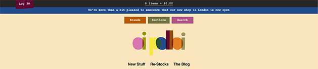
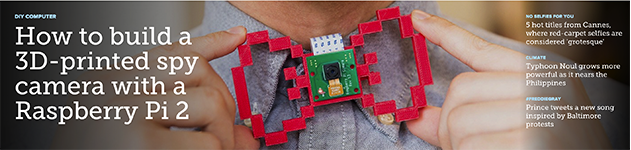

Ellen Tracey is a website that seems would most appropriately fit women from ages 25 to 50. Looking at the type of fashion (i.e. material used) I concluded that it is mainly target middle to high-class women.
The user needs to be able to navigate through the page smoothly (take in account the older audience). The user also nees to be able to know how to add items to their cart. The site must also be secure enough to order off of online. This navigation makes it easy for any person to jump from one page to the other.
This navigation is simplistic and very clean. This goes hand in hand with the "less is more" concept. The font, in my opinion, fits right in with the blog type of fashion. The white space gives the words breathing space, this works because the rest of the page is a little cluttered and filled with many different colors.
Breo is a very vibrant site that features young faces on the home page. The target audience for this website seems to range from young adults to adults from ages 18 to 30. The audience could also be from lower to middle-class.
The user needs to be able to easily be able to navigate. Their icons (search and cart) are very prominent which makes this a good example. The search icon spreads out to show the search bar and is big and very easy to use. The cart does the same thing. This is very important because if people can't access these features, they aren't going to stick around on your site.
This website sells sunglasses and watches. The colors for the logo in the header are appropriate because it reminds people of the beach which is what their home photo is. The setup for the navigation is interesting because it is on both sides of the logo. This type of navigation layout works for them because their target audience is young and young people are able to navigate through sites easily. Overall, I liked this navigation because of how simple and effective the layout is.
This call to action, to me, is very pleasing to my eye. The website is about ice cream and the colors suite it well due to the fact that he is targeting children. The font also goes well with the kid attraction. The font is very cury which becomes inviting. The border is in the zig-zag shape, which gives it a little sillyness. Overall, this gives off a friendly and fruity vibe which pairs perfectly with the business.
This call to action, to me, is very pleasing to my eye. The website is about ice cream and the colors suite it well due to the fact that he is targeting children. The font also goes well with the kid attraction. The font is very cury which becomes inviting. The border is in the zig-zag shape, which gives it a little sillyness. Overall, this gives off a friendly and fruity vibe which pairs perfectly with the business.
This contact form amaaaazed me when I first saw it. It offers the option of sending them an email very simply or contacting them by phone. The layout of this form is very appealing to my eyes because it is balanced with information on both sides. They even used this page to promote the FB page in a very subtle way.